Quick Guide to Create a New Project
Follow these steps to create a new project in TPEN.

-
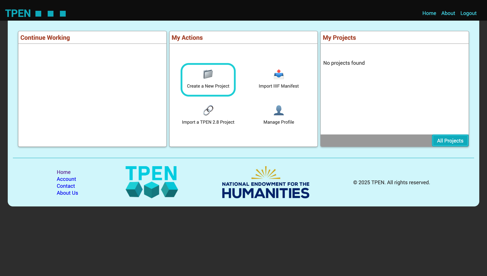
Click on the Create a New Project from My Actions tab on the home page.
-
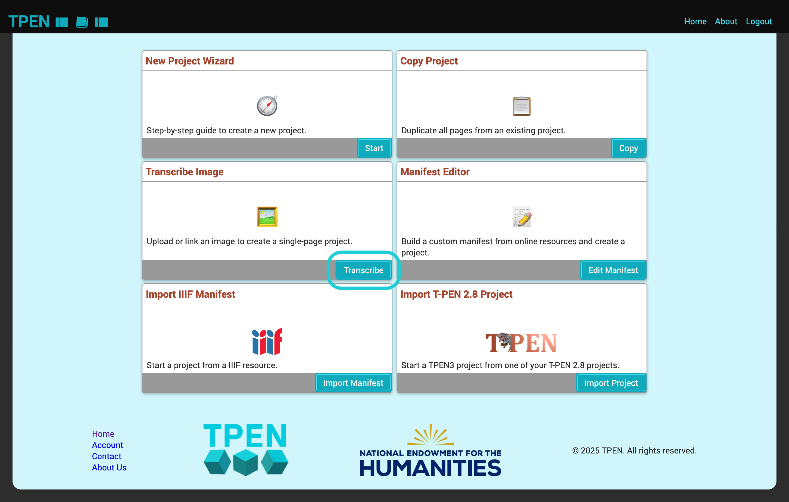
Click on the Transcribe button in the Transcribe Image tab.
-
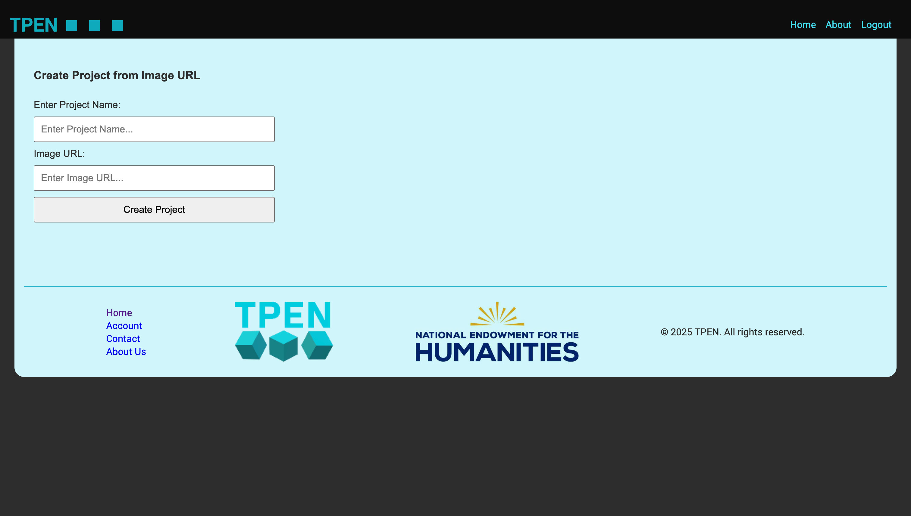
Enter the Project Name and a URL of the image you want to use for your project in the provided field.
-

Click on the Create Project button to finalize the creation of your project.
-
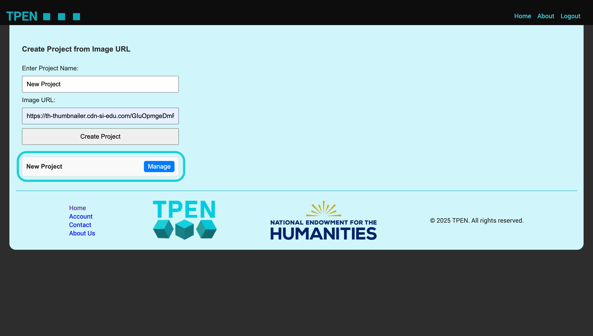
Your new project will now appear in the project list, and you can start transcribing it.
-
Click on the Create a New Project from My Actions tab on the home page.
-
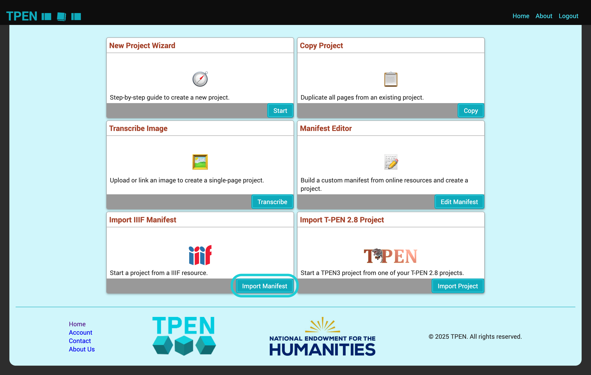
Click on the Import Manifest button in the Import IIIF Manifest tab.
-
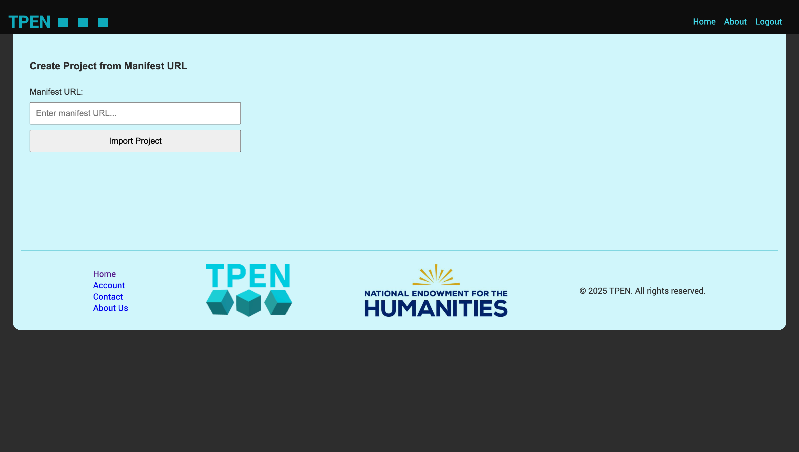
Enter the IIIF Manifest URL in the provided field.
-
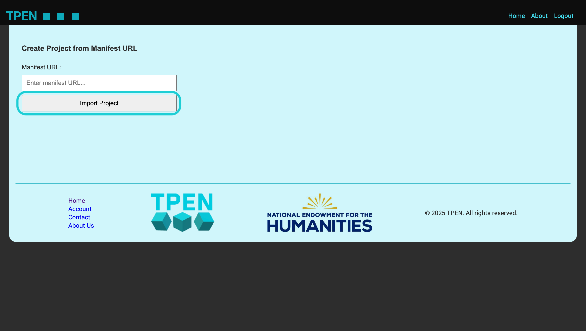
Click on the Import Project button to finalize the creation of your project.
-
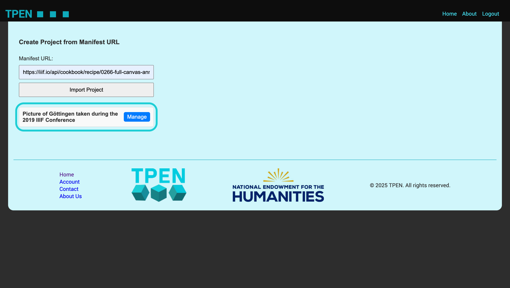
Your new project will now appear in the project list, and you can start working on it.
-
Click on the Create a New Project from My Actions tab on the home page.
-
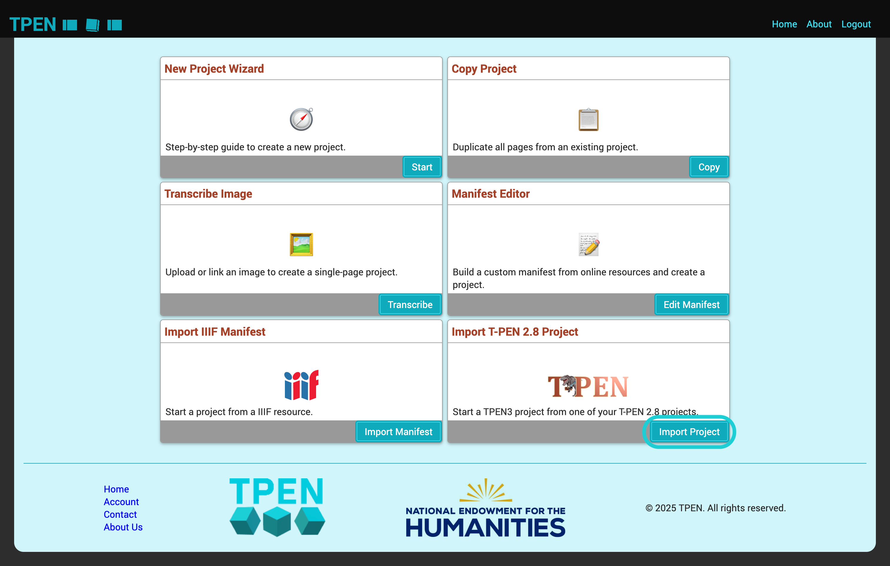
Click on the Import Project button in the Import T-PEN 2.8 Project tab.
-
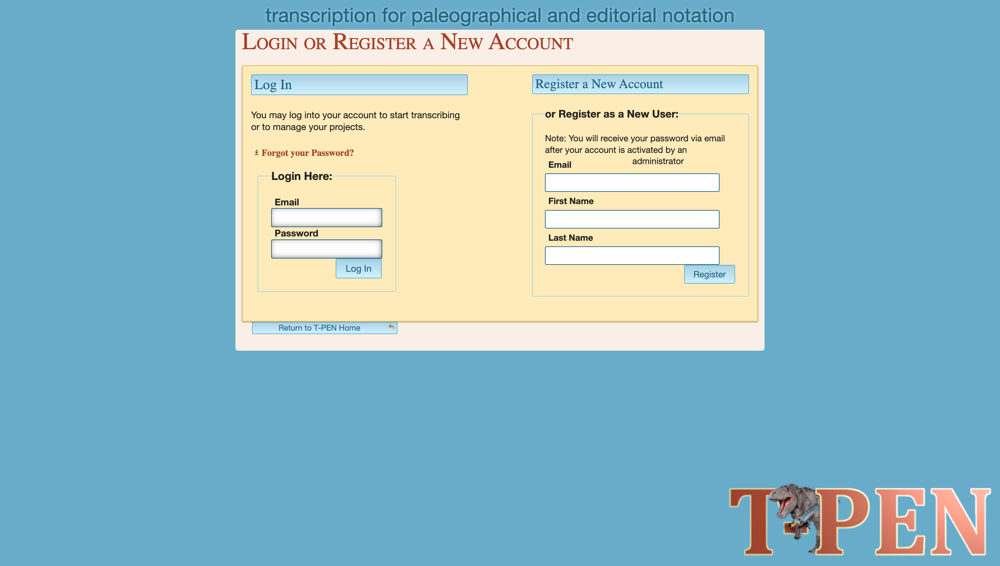
This will take you to the T-PEN 2.8 Login Page. Log in with your T-PEN 2.8 credentials.
-
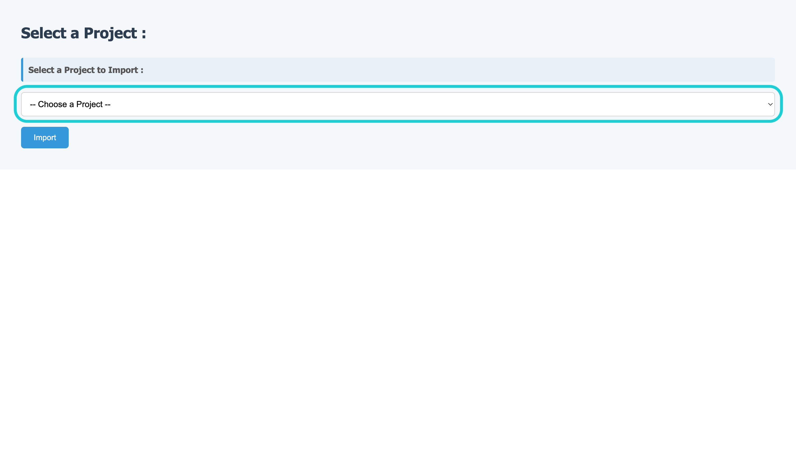
After successful login, you will see a list of your T-PEN 2.8 projects. Select the project you want to import.
-
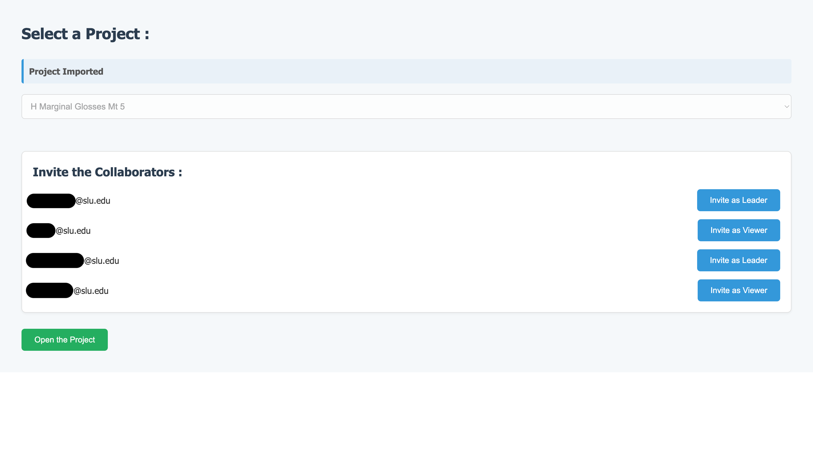
As you select a project, it will be imported into TPEN3, with all the project configurations and annotations preserved.
-
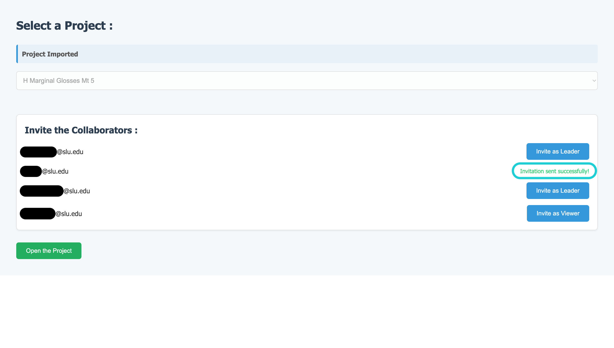
All the collaborators from the T-PEN 2.8 project will be listed and you can invite them to collaborate on the imported project.
-
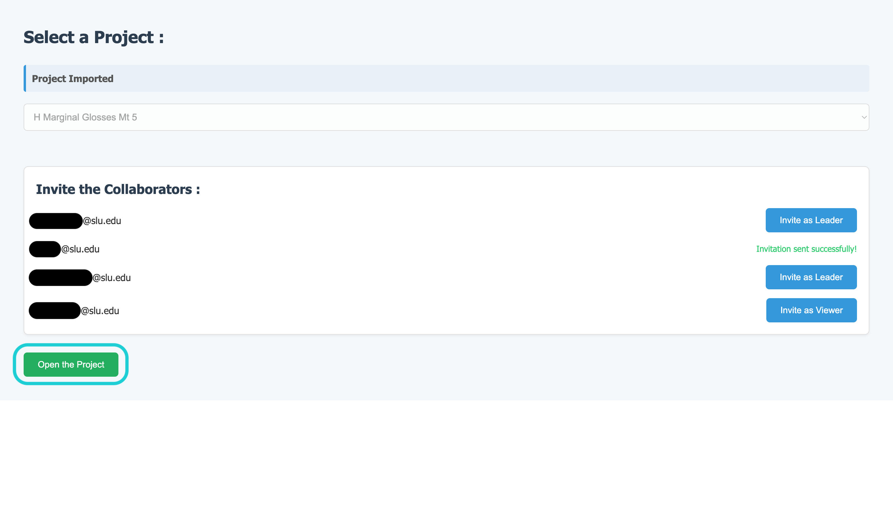
Lastly, review the project details and you can start working on it.
Click on the Create a New Project from My Actions tab on the home page.
Click on the Transcribe button in the Transcribe Image tab.
Enter the Project Name and a URL of the image you want to use for your project in the provided field.
Click on the Create Project button to finalize the creation of your project.
Your new project will now appear in the project list, and you can start transcribing it.
Click on the Create a New Project from My Actions tab on the home page.
Click on the Import Manifest button in the Import IIIF Manifest tab.
Enter the IIIF Manifest URL in the provided field.
Click on the Import Project button to finalize the creation of your project.
Your new project will now appear in the project list, and you can start working on it.
Click on the Create a New Project from My Actions tab on the home page.
Click on the Import Project button in the Import T-PEN 2.8 Project tab.
This will take you to the T-PEN 2.8 Login Page. Log in with your T-PEN 2.8 credentials.
After successful login, you will see a list of your T-PEN 2.8 projects. Select the project you want to import.
As you select a project, it will be imported into TPEN3, with all the project configurations and annotations preserved.
All the collaborators from the T-PEN 2.8 project will be listed and you can invite them to collaborate on the imported project.
Lastly, review the project details and you can start working on it.
1Start creating new projects using different templates.
2Import IIIF manifest using the manifest URL.
3Import a T-PEN 2.8 old project to T-PEN 3 with the same project structure.
4View and Manage user profile.
5Easy access to all your projects.
6Use the setting like button to manage the project configurations.
7View the list of all the projects.
8View the newest project created with last edited date.
1Click on Start on the New Project Wizard to go through a guide to help understand how to create a new project.
2Click on Copy to duplicate an existing project.
3Click on Transcribe to create a new project from an image.
4Click on Edit Manifest to build a custom manifest from online resource to create a new project.
5Click on Import Manifest to import a project from IIIF Manifest.
6Click on Import Project to import a TPEN2.8 project to TPEN3 with the same configurations.

1The user profile tab has all the User details including Display Name, Email and Metadata.
2Click the Update Profile to edit the Display Name.
1Project Name is contained in the Header.
2Click Transcribe button to redirect to the transcribe page directly.
3The Project detail tile which includes the Project Name, Project ID, Project Owner, all collaborators and Manifest page image.
4The Metadata tile includes the Metadata of the Project.
5Click the Edit Metadata button to Create/Edit/Delete metadata content.
6The Collaborators tile includes a list of all the collaborators with their roles.
7Click the Manage Collaborators button to Invite new members and edit roles for existing members.
8The Layers & Pages tile includes an information card about each layer and its page count.
9Click the See Details/Modify button to further add new layers, reorder the pages, delete or add new pages.
10The Project Roles tile includes all the roles and detailed permissions for each role.
11Click the Add Role button to add new roles and permissions.
12The Project Options tile includes project configurations details.
13Click the See Details button to view and edit project descriptions and link to a line parser for each canvas.
14The Tools tile includes list of all the tools available for a project.
15Click the Add iFrame Tool button to add new iframe tools to the project.
16Click the Save Tools button to save only the checked tools from the list of tools.
17The Exports & Links tile include a link to the latest version of manifest saved.
18Click the Export Project button to export the project as a JSON manifest file.